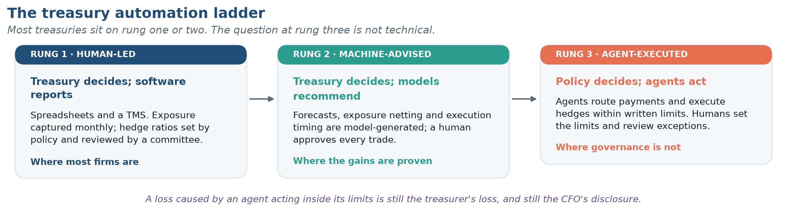

AI in International Finance
A companion to the chapters
Each chapter of this book ends its core material with a one-page box on how artificial intelligence bears on what the chapter has just developed. This companion is where the full treatment lives: one section per chapter, in chapter order, with its own exhibits, recall items and problems. Read a section after the chapter it belongs to; it assumes you have.
The sections are deliberately unenthusiastic. AI is doing real and measurable work in international finance, and it is also the subject of more confident nonsense than any topic in the field since the credit derivatives of 2006. The discipline asked of you is the same one How This Book Handles Data asks about data: name the mechanism, then ask what evidence would distinguish it from the claim’s opposite.
Chapter 1 · Globalization and the Multinational Firm
Chapter 1 has four elements AI touches directly. Take them in order of how well established the effect is.
Friction 4 is the one AI actually attacks
Return to the four frictions in What Makes International Finance Different. Three of them are not technological problems at all. Multiple currencies exist because sovereigns issue money (Friction 1); jurisdictional risk exists because states have power (Friction 2); institutional heterogeneity exists because legal systems evolved separately (Friction 3). No model, however capable, dissolves any of these. A language model cannot make the Argentine peso convertible or place a Chinese auditor’s working papers within reach of a U.S. subpoena.
Friction 4 is different, because it is fundamentally a cost-of-information problem. The reason investors know less about foreign firms is not that the information is unobtainable; it is that obtaining it requires reading a filing in another language, under another accounting standard, written for another regulator, embedded in a local news environment you do not follow. That is precisely the kind of work the current generation of models does cheaply. The BIS’s survey of the technology makes the general point: the decisive capability is imposing structure on unstructured data at scale — text, images, satellite imagery, transcripts — which is exactly the form in which cross-border information arrives.
The implications for this course are concrete:
- Foreign disclosure becomes searchable. A model can read a Japanese annual report, a Brazilian central bank minute and a Polish bond prospectus in one pass and return comparable fields. The institutional heterogeneity of Friction 3 does not disappear, but the cost of navigating it falls sharply.
- Country risk assessment gets a new input class. Night-time lights, shipping movements, pollution imagery and job postings can all be converted into economic indicators, which matters most precisely where official statistics are weakest — the emerging markets of Chapter 18.
- Nowcasting compresses the data lag. Central banks are already building real-time estimates of activity and inflation from unstructured sources, and the BIS documents a line of work in which models trained to predict the next word are applied, without retraining, to predicting the next observation in a time series.
Here is the honest part. If the informational friction is falling, the home bias puzzle of What Makes International Finance Different should be shrinking — investors should hold more foreign equity as the cost of knowing about foreign firms falls. Whether that is happening is an open empirical question, and it is a good one; Chapter 15 gives you the data to examine it. Be alert to the possibility that home bias was never mainly about information.
Market structure: the risk is correlation, not speed
Who Is in This Market? showed you a market in which dealers and principal trading firms account for the large majority of the $9.6 trillion in daily turnover, and non-financial customers for about 5 percent. Algorithmic execution is not new there — electronic trading restructured FX markets long before the current AI wave, and Chapter 5 treats that history properly. What is new is the breadth of what the algorithms condition on, and the degree to which they act without a human in the loop.
The financial-stability concern identified by the BIS is specific and worth stating precisely, because it is routinely misreported as a concern about speed. The risk is monoculture. If many institutions use models built on the same handful of foundation architectures, trained on overlapping data, they will tend to read the same signal the same way at the same moment. The result is amplified herding, correlated liquidity withdrawal and procyclicality — and, as a regulatory matter, the possibility of collusive-looking outcomes among algorithms that were never instructed to collude. A related exposure runs through concentration on the supply side: a small number of firms provide frontier models, so third-party dependency becomes a systemic variable rather than a procurement detail.
Hold this next to Exhibit 1.9 in Chapter 1. A market whose intermediation is concentrated in a few dozen institutions, running models sourced from a few providers, is more tightly coupled than its turnover statistics suggest. That is a Chapter 5 and Chapter 20 problem, and you now have the vocabulary for it.
The treasury function: where the money has actually been saved
This is the contact point with the most concrete evidence, and it bears directly on the exposure framework of Three Kinds of Currency Exposure and on the hedging decision in Chapter 11.
Corporate treasury work decomposes into four tasks: forecast the foreign-currency cash flows, identify the resulting exposures, decide the hedge, and execute it. The first, second and fourth are pattern recognition and process. The third is judgment. AI has moved quickly through the first, second and fourth, and the reported numbers are not trivial — a Citi and Ant International pilot for an airline reported roughly 30 percent savings in hedging costs alongside forecasting accuracy above 90 percent, and broader industry surveys report cash- and currency-forecasting accuracy improvements on the order of 20 to 30 percent where AI tools have been deployed.
Note carefully what those numbers are and are not. Improved cash-flow forecasting is a genuine and large gain: a treasurer who knows next quarter’s euro receipts to within two percent rather than ten hedges a smaller notional, rolls fewer contracts, and pays less in spread and in over-hedging. That is a cost saving achieved without any claim to forecast the exchange rate. Keep those two forecasts separate in your mind; the Trap box below is about what happens when people do not.
The direction of travel is from decision support to execution. Treasury management platforms now embed forecasting and risk tools directly in corporate workflows, and a frontier set of firms is granting software agents authority to transact — routing payments on cost and speed criteria and managing currency exposure and cash pooling inside defined corporate policy. Exhibit AI 1.2 lays out the ladder.

The binding constraint on rung three is governance, not capability. The industry’s own annual survey of AI use in financial services reports exactly this: adoption of generative and agentic systems is accelerating, formal risk management now governs deployment across the industry, and third-party models remain the hardest thing to validate, with layered governance emerging as the standard response. Return-on-investment and the cost of running these systems have become first-order considerations rather than afterthoughts.
For a treasurer, the governance questions are these, and they are examinable:
- Authority. What notional can an agent transact without a human approval, in which currencies, and at what tenor?
- Explainability. When the hedge ratio moves from 60 percent to 85 percent, can the treasurer state why to an auditor? A model that cannot be interrogated cannot be defended in a 10-K.
- Model risk. Who validated the model, and does the firm have the right to inspect it? With a third-party model the honest answer is often “no,” which is why this is the industry’s hardest governance problem.
- Failure mode. What does the system do when the input data is stale, the market gaps, or the model is confidently wrong? Chapter 1’s Volkswagen mini-case, extended in Chapter 11, is the pre-AI version of this question.
The Trap box in the chapter (AI and the Four Frictions) works through the most common misreading of these numbers: “Our AI forecasts the euro, so we have stopped hedging.” Reread it now if you skipped it.
AI as a macroeconomic force moving the rates themselves
There is a fourth channel, and it is the one most likely to appear on an exam in the next few years precisely because it is not about finance technology at all. The AI investment boom is itself an international macroeconomic shock. The BIS characterizes it as a large and increasingly debt-financed investment surge, one that is lifting trade and equity markets and generating sizeable terms-of-trade and wealth effects that differ substantially across countries — with a productivity payoff that remains uncertain and unevenly distributed.
Read that through the apparatus of this book. A country-specific investment boom financed by foreign borrowing is a capital-account surplus, hence a current-account deficit, hence real exchange rate appreciation — the mechanics of Chapter 3 and the models of Chapter 7. Economies that export the inputs (semiconductors, capital equipment, energy) experience a terms-of-trade gain; economies that import the finished intelligence do not. And because AI affects aggregate demand and aggregate supply at the same time, it blurs the cyclical signal central banks read, complicating the policy calibration that drives the interest differentials at the heart of Chapters 6 and 7.
In other words: before AI changes how you hedge, it will change what you are hedging against. That is the larger story, and it is the one with the least commentary attached to it.
What AI does not change
A short list, because it is the part most worth retaining.
| It does not change | Because |
|---|---|
| The forecastability of exchange rates | The limit is not computational. Spot rates already embed the market’s information, so the residual is close to unforecastable news. Chapter 7. |
| The case for hedging | Hedging is justified by the convexity of distress costs, not by a view. A better forecast changes the notional, not the logic. Chapter 11. |
| Sovereign risk | A state’s capacity to expropriate, restrict or default is unaffected by the quality of your model of it. Chapter 18. |
| The parity conditions | CIP and UIP are arbitrage and equilibrium relations. Better execution closes deviations faster; it does not repeal the no-arbitrage condition. Chapter 6. |
| Responsibility for the number | A hallucinated figure with a confident citation is still your error when it appears in your work. How This Book Handles Data. |
That last row deserves emphasis in a book of this kind. Language models generate text that is statistically plausible, which is not the same property as factually correct; the BIS is explicit that hallucination is a structural feature of how these systems work rather than a defect awaiting a patch, and that fabricated supporting citations are part of the failure mode. A model output has no vintage. It cannot tell you whether the reserve share it reported is the 2026 Q1 value, a stale figure from two years ago, or an average of several sources it has silently blended — which is exactly the confusion Chapter 1’s news dossier was built around. The retrieval discipline of How This Book Handles Data is therefore more important in an AI-assisted workflow, not less.
Questions to carry forward
- If AI lowers the cost of evaluating foreign firms, home bias should fall. Name two reasons it might not. (Revisit in Chapter 15.)
- A treasurer reports that an AI system improved hedge performance by 30 percent. What single question tells you whether that is a cost saving or a disguised directional bet? (Chapter 11.)
- If every major dealer’s pricing model is a fine-tuned version of the same foundation model, what happens to liquidity in the first hour of an unexpected policy announcement? (Chapters 5 and 20.)
- The AI capital expenditure boom is concentrated in a few economies and partly financed externally. Trace the effect on those economies’ current accounts and real exchange rates. (Chapters 3 and 7.)
Recall
Short answers, from memory. The chapter’s own Recall Ledger carries the core AI item; this one goes deeper.
- (Carried forward in later chapters.) A firm reports that its AI system cut hedging costs by 30 percent. Write the one clarifying question you would ask, and state what each possible answer would imply.
Problems
AI 1.1 A treasury vendor advertises that its model “predicts EUR/USD with 87 percent accuracy.” (a) State precisely what that sentence would have to mean to be testable. (b) Name the benchmark the claim must beat, and explain why beating a coin flip is not sufficient. (c) Suppose the claim is true in-sample and false out-of-sample. Explain why that pattern is the expected result rather than a surprise, citing proposition 4 of the Top Ten.
AI 1.2 The AI investment boom is financed partly by cross-border borrowing and is concentrated in a small number of economies. Trace its effect through (a) the capital account, (b) the current account, and (c) the real exchange rate of a recipient economy. Then name one group of economies that gains through the terms of trade and one that does not, and say why.
AI 1.3 Give one example each of an AI application in international finance whose risk is primarily operational, one whose risk is primarily systemic, and one whose risk is primarily epistemic (that is, a risk about knowing). Justify each classification in one sentence.